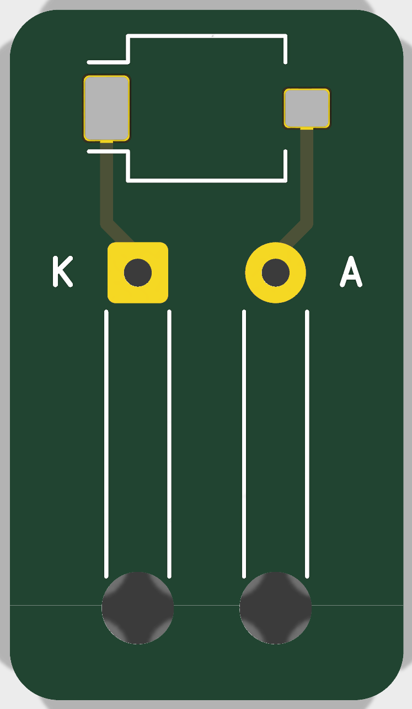

UV Bench Rev C: soldering guide
Main board (26 parts) and the remote sensor head · hand soldering · values, positions, order, and the MCU.

The finished main board (KiCad 3D view). D1, the photodiode next to the round cut-out, and SW1, the encoder on the right, have no 3D model in KiCad's library, so only their pads show. Every part sits on the top side. The through-hole parts (J1, J4, SW1, and the J2 wires) are soldered from underneath.
1. Before you start
Which solder
| Lead-free, e.g. Sn99.3Cu0.7 or SAC305 (your preference) | Tin-lead, Sn63Pb37 or Sn60Pb40 | |
|---|---|---|
| Melts at | 217–227 °C | 183 °C |
| Iron setting | 340–360 °C for SMD, ~370 °C for R1 and the ground pads | 300–320 °C |
| Wetting | Slower; it needs fresh flux on every joint | Flows easily, forgiving |
| A good joint looks | Satin or slightly grainy: that's normal | Shiny and smooth |
| Health | Flux fumes come with both: use a fan or an extractor. With lead, wash your hands afterwards and don't eat at the bench | |
Both work on this board. Its finish is lead-free HASL, which wets well with either. Lead-free with your SMD291NL flux is fine: the flux is what makes the difference. Pick one alloy and stay with it for the whole board. Mixing them in a joint makes an alloy whose melting point is spread out, which can give cracked, grainy joints. Wire diameter: 0.5 mm for the SMD parts, 0.8 mm or more for the encoder and the wires.
Tools on the bench
- Iron tip: a 1.5–2 mm chisel, or a "hoof" (bevel) tip. A fine conical tip holds too little heat, even for the MCU.
- Fine, pointed tweezers; a ×10 loupe, or your phone's camera at full zoom; a bright lamp.
- Solder wick 1.5–2 mm, isopropyl alcohol (IPA) and an old toothbrush; Kapton tape.
- A multimeter with continuity beep and diode mode.
- Your third hand, or tape, to hold the board flat.
Bag discipline
Ceramic capacitors carry no marking: a 10 µF and a 100 nF look identical. Keep each DigiKey bag closed until its step, solder every part from one bag, then close it before opening the next. If a part escapes, don't guess: throw it away (you have spares).
2. Where each part goes
Click a value to see where its parts go. Hover over a part for its reference and value.
Top view (KiCad 3D render). The reference names are printed on the board's silkscreen; the values aren't, which is why the bags matter.
Values and references
A correction to your example: C5 is 100 nF, not 10 µF. The 10 µF ones are C1, C2, C3 and C7.
| Value | References | Qty | Package | Orientation |
|---|
3. Soldering order
The rule: lowest and hardest parts first. The MCU goes first, while the board is flat and empty and you're fresh. The tall connectors go last, because they get in the way of the iron. Tick each step as you go; your ticks stay in this browser. Click a step's title to highlight its parts on the map.
4. The MCU (U2, TSSOP-20, 0.65 mm pitch)
The only fine-pitch part. Its legs are 0.65 mm apart, with 0.3 mm gaps. That sounds small, but with flux it is very doable: surface tension does most of the work. Molten solder prefers to sit on the copper pad and the leg, not in the gap between them, as long as there's flux and not too much solder.
Placing it
- Find pin 1. On the chip: a small dot or dimple in one corner, and/or a bevelled long edge. On the board: the small triangle at the top-left of U2, next to C5. Pin 1 goes there. Pins 1–10 run down the left side, 11–20 up the right side.
- Clean the pads with IPA. Put one tiny drop of solder on one corner pad only: pin 20, top right.
- Brush a thin film of flux over all 20 pads.
- Place the chip with tweezers. Reheat the tinned pad and slide the chip until every leg sits centred on its pad, on both sides. Look with the loupe from several angles. Take your time: this is the only step that is hard to undo.
- Solder the opposite corner: pin 10, bottom left. The chip is now fixed. Check the alignment once more.
Soldering the legs
Pin by pin (recommended for a first time): fresh flux, then touch the tip where the leg meets the pad, and feed a very small amount of solder, ~1 s per leg. Work along one side, then the other.
Drag soldering (faster, once you're comfortable): plenty of flux on one row; load a small bead of solder on the tip; drag it slowly along the ends of the legs, ~1 s per leg. Each leg takes what it needs.
Lead-free: 340–360 °C. Flux burns off faster at these temperatures, so re-apply it whenever the solder stops flowing nicely. Don't dwell more than ~3 s on one area; let it cool between rows.
Bridges, and checking
- A bridge (solder joining two legs) is normal and easy to fix. Add flux, then drag a clean tip away from the chip along the bridge: the extra solder follows the tip. If it stays, lay the wick on it with flux, press the iron on the wick for 2 s, and lift both together.
- Inspect every leg with the loupe and light at a low angle. Each leg should show a small concave fillet onto the pad. Run a needle gently along the legs: a leg that moves isn't soldered.
- Measure: pin 4 (VDD) to pin 5 (VSS) must not beep. Pin 5 to the ground pour: beep. Neighbouring legs shouldn't beep, except where the circuit joins them.
- Pins 2, 3 and 16 are unused: solder them anyway, for strength.
- Clean the flux with IPA and the toothbrush before soldering U2's neighbours: you'll see the joints better.
5. Small parts: the two-pad method
- Tin one pad with a small drop.
- Hold the part with tweezers, reheat that drop, and slide the part in flat against the board. Remove the iron, then let go.
- Solder the second pad (flux, tip, a little solder).
- Retouch the first pad with a touch of flux, so it reflows properly.
Pads on the ground pour (the GND end of C1–C8, R3, R4 and R8) take longer to heat, because the copper plane draws heat away. Hold the tip a little longer, or go 20 °C higher. R1 (2512, 1 W) has big pads: use the largest tip you have.
6. Before the first power-up
- Look at every joint with the loupe. Check the orientation of U2, D1 and D2 against the table above.
- Resistance between +5 V and GND (J1 pin 2 to pin 1): it must not be a short. The reading climbs as C1/C2 charge: that's normal.
- +3V3 to GND (across C3): not a short either.
- First power from a bench supply: 5 V with a 50 mA current limit, LED star not connected (or ARM switch off). Expect a few mA. Measure 3.3 V across C3. Then plug in the ST-LINK and program it.
7. The sensor head

Sensor head, 12 × 21 mm (top view). D1's pads at the top; wire pads K and A, with their strain-relief holes, below.
- D1 (SFH 2401) first: its large pad is the cathode, on the K side (left). Clear window up. Same two-pad method as on the main board.
- Clean the flux off the window with IPA, and don't touch it. Residue on the window absorbs UV and shifts the calibration.
- The wires: thread each through the big hole first, then solder it in the small pad next to it. The big hole takes the pulling, the joint doesn't. K → J4 pin 1, A → J4 pin 2; the back of the board says so too.
- The ZWB2 filter goes over D1 only after the board is clean and tested.